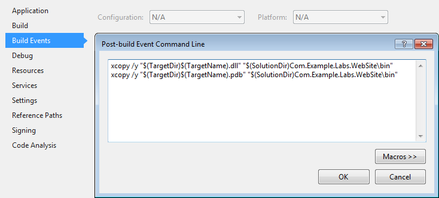

The ServiceProxy<T> class is used by the clients to get a WCF channel to access to the WebServices layer over network.
When developping a WebSite (can be seen as client/consumer of the WebServices) that is hosted on the same server as the WebServices layer, it is possible to get local instances and by-pass the WCF communication to increase performances.
Repeat these actions with the following projects
Go to the Properties of the WebSite project.
Go to Build Events and add the following line in the Post-build Event section.
xcopy /y "$(TargetDir)$(TargetName).dll" "$(SolutionDir)Com.Company.Project.WebSite\bin" xcopy /y "$(TargetDir)$(TargetName).pdb" "$(SolutionDir)Com.Company.Project.WebSite\bin"
Example
using (var service = new ServiceProxy<IMyService>()) { service.Proxy.MyMethod(); }
Edit the Web.config of the WebSite.
<serviceProxyConfiguration isLocal="True" />
Do not forget to add the connection string required by the Crud (can be found in the App.config file of the Unit Tests).
<connectionStrings> <add name="Default" connectionString="Data Source=localhost;Initial Catalog=Labs;Integrated Security=SSPI;" /> </connectionStrings>
Now the ServiceProxy<T> class will create local instances without using the WCF communication.
On WebSite-side nothing changes
using (var service = new ServiceProxy<IMyService>()) { service.Proxy.MyMethod(); }